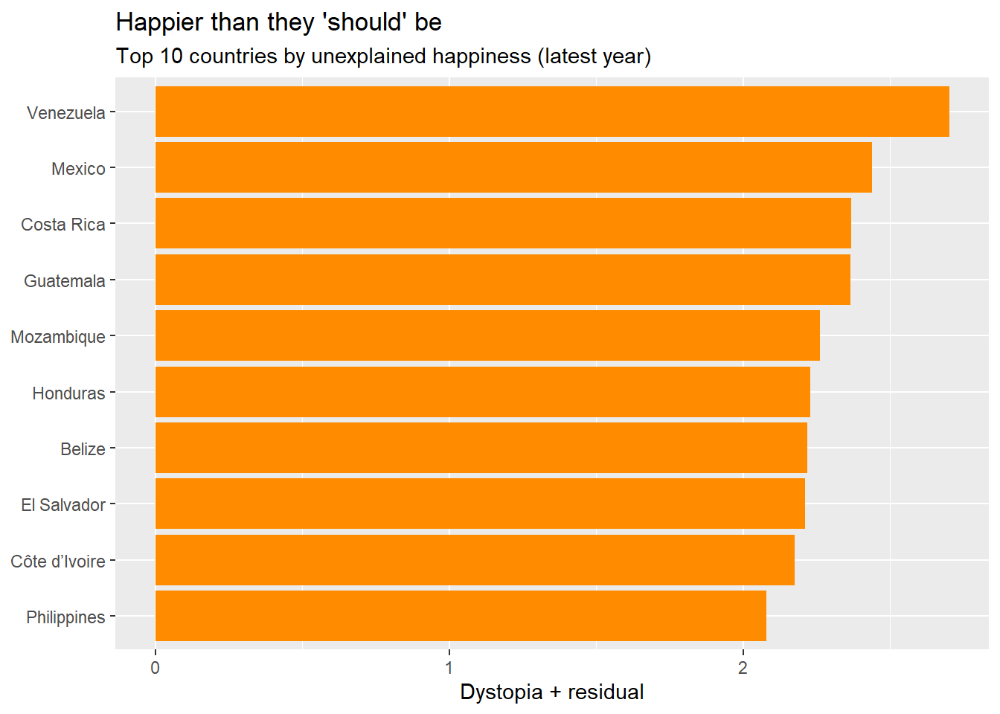

Every March, headlines announce that Finland is “the happiest country in the world” — again. But what actually sits behind that single number, how much does it move from year to year, and how much of a nation’s happiness can be pinned to money, health and freedom? This project uses five years of global survey data to look past the headline ranking and ask what really travels with well-being.
Published by: UN Sustainable Development Solutions Network (UNSDSN)
Underlying source: Gallup World Poll — the Cantril ladder life-evaluation question
Coverage: Five annual files, 2015–2019 (one CSV per report year)
Licence: CC0 1.0 — Public Domain (no rights reserved)
Because the data is released under CC0, there is no legal obligation to attribute it. As good academic practice we will still credit it, e.g. “World Happiness Report, UNSDSN, via Kaggle (CC0). Underlying data: Gallup World Poll.”
3. What’s in It
Each row represents one country in one report year. Combined across the five files there are roughly 780 rows and 150–160 countries per year. Crucially, the schema is not identical across years — column counts and names drift — so a small harmonisation step is needed before any cross-year analysis.
Per-year structure
Year
Rows
Cols
What is different that year
2015
158
12
Includes Region and Standard Error; has Dystopia Residual
2016
157
13
Includes Region; Standard Error replaced by Lower/Upper Confidence Interval
2017
155
12
Region dropped; Whisker high/low instead of CI; Dystopia Residual kept
2018
156
9
Slim schema: columns renamed; Region, CI and Dystopia Residual all removed
2019
156
9
Same slim schema as 2018
Row counts vary because the set of surveyed countries changes slightly each year; column counts vary because the report’s format was simplified over time.
Key variables
Concept
Column name(s) (2015–17 / 2018–19)
What it measures
Country
Country / Country or region
The nation — the unit of analysis
Region
Region (2015–2016 only)
World region grouping (e.g. Western Europe)
Rank
Happiness Rank / Overall rank
Position in that year’s global ranking
Happiness score ★
Happiness Score / Score
Cantril-ladder life evaluation, 0–10 — the TARGET variable
GDP per capita
Economy (GDP per Capita) / GDP per capita
Contribution of income to the score
Social support
Family / Social support
Contribution of having someone to count on
Life expectancy
Health (Life Expectancy) / Healthy life expectancy
Contribution of healthy longevity
Freedom
Freedom / Freedom to make life choices
Contribution of freedom over life choices
Generosity
Generosity
Contribution of charitable behaviour
Corruption
Trust (Government Corruption) / Perceptions of corruption
Contribution of perceived honesty / low corruption
Dystopia residual
Dystopia Residual (through 2017)
Unexplained remainder above the Dystopia baseline
★ = target variable. Where two names are shown, the report renamed the column in the 2018–2019 files.
A subtlety that shapes the whole analysis
The six “factor” columns are not raw measurements.
What they actually are: Each factor column (GDP, social support, life expectancy, freedom, generosity, corruption) is the estimated contribution of that factor to the country’s score — not the raw value (e.g. it is not GDP in dollars).
They are additive: The six contributions plus the Dystopia Residual sum (up to rounding) to the Happiness Score. The bars in the report literally stack to the total.
Why it matters: This means a model that “predicts” the score from these six columns will score near-perfectly almost by construction — a fact we deliberately exploit (and flag) in Question 3.
4. Research Questions (Updated)
Q1. How strongly are GDP and social support associated with happiness, and does GDP show diminishing returns?
Planned output: - Scatter plot: GDP per capita vs. happiness (with LOESS curve) #GDP vs. happiness
ggplot(Our_Data_, aes(x =`Explained by: Log GDP per capita`,y =`Life evaluation (3-year average)`)) +geom_point(alpha =0.6) +geom_smooth(method ="loess", color ="blue") +labs(title ="GDP vs Happiness with LOESS Curve",x ="GDP per Capita",y ="Happiness Score" )
`geom_smooth()` using formula = 'y ~ x'
Warning: Removed 1097 rows containing non-finite outside the scale range
(`stat_smooth()`).
Warning: Removed 1097 rows containing missing values or values outside the scale range
(`geom_point()`).

ggplot(Our_Data_, aes(x =`Explained by: Log GDP per capita`, y =`Life evaluation (3-year average)`)) +geom_point(alpha =0.6) +geom_smooth(method ="loess", color ="blue") +labs(title ="GDP vs Happiness with LOESS Curve",x ="GDP per Capita",y ="Happiness Score" )
`geom_smooth()` using formula = 'y ~ x'
Warning: Removed 1097 rows containing non-finite outside the scale range
(`stat_smooth()`).
Warning: Removed 1097 rows containing missing values or values outside the scale range
(`geom_point()`).
Scatter plot: social support vs. happiness #social support vs.happiness
ggplot(Our_Data_, aes(x =`Explained by: Social support`, y =`Life evaluation (3-year average)`)) +geom_point(alpha =0.6) +geom_smooth(method ="loess", color ="red") +labs(title ="Social Support vs Happiness",x ="Social Support",y ="Happiness Score" )
`geom_smooth()` using formula = 'y ~ x'
Warning: Removed 1097 rows containing non-finite outside the scale range
(`stat_smooth()`).
Warning: Removed 1097 rows containing missing values or values outside the scale range
(`geom_point()`).
Goal: To assess whether GDP and social support are both strongly associated with happiness, and whether the effect of GDP flattens at higher income levels.
Q2. How well do the six reported factors explain happiness scores, and which countries deviate from the model?
Planned output: - Multiple linear regression model (happiness ~ six factors) - Model performance: R² and RMSE - Ranking of countries by residuals (over- and under-performers)
Claim type: Predictive
Goal: To quantify how much of happiness can be explained by the given factors and identify countries that are significantly above or below model expectations.
5. Context & Target Audience
Context: Journalistic — a data-driven story for an educated general audience curious about global well-being, not a peer-reviewed paper.
Audience: General readers, students and the policy-curious public; no statistical background assumed.
Candidate story angle
“Rich, free — and still restless: what five years of global happiness data reveal about the part of well-being money can’t buy.” Headline ranking as the hook (Q1), the wealth-vs-relationships tension as the body (Q2), and the unexplained residual as the twist (Q3).
Presentation formats (mapped to each question)
• Choropleth world map — happiness scores by country, shaded by score range — sets the scene for Q1.
• Slope / line chart — top-10 countries’ scores across 2015–2019, plus a small “biggest movers” table — the evidence for Q1.
• Annotated scatter — GDP per capita vs. happiness with a smoothed fit, plus a correlation heatmap — carries Q2.
• Coefficient & residual chart — which factors weigh most, and a ranked list of over- / under-performers by residual — delivers Q3.
• Interactive dashboard — lets readers filter by year or region and explore on their own — ties the three threads together.
These formats prioritise accessibility and visual storytelling over statistical formalism, which fits a journalistic audience that wants the story behind the numbers.
Proposed Next Step
Load the five CSV files in R and harmonise them into one tidy data frame: add a Year column, standardise the differing column names, and decide how to handle the columns that exist only in some years (Region, the confidence-interval fields, and the Dystopia Residual). After that, begin exploratory analysis for Q1.